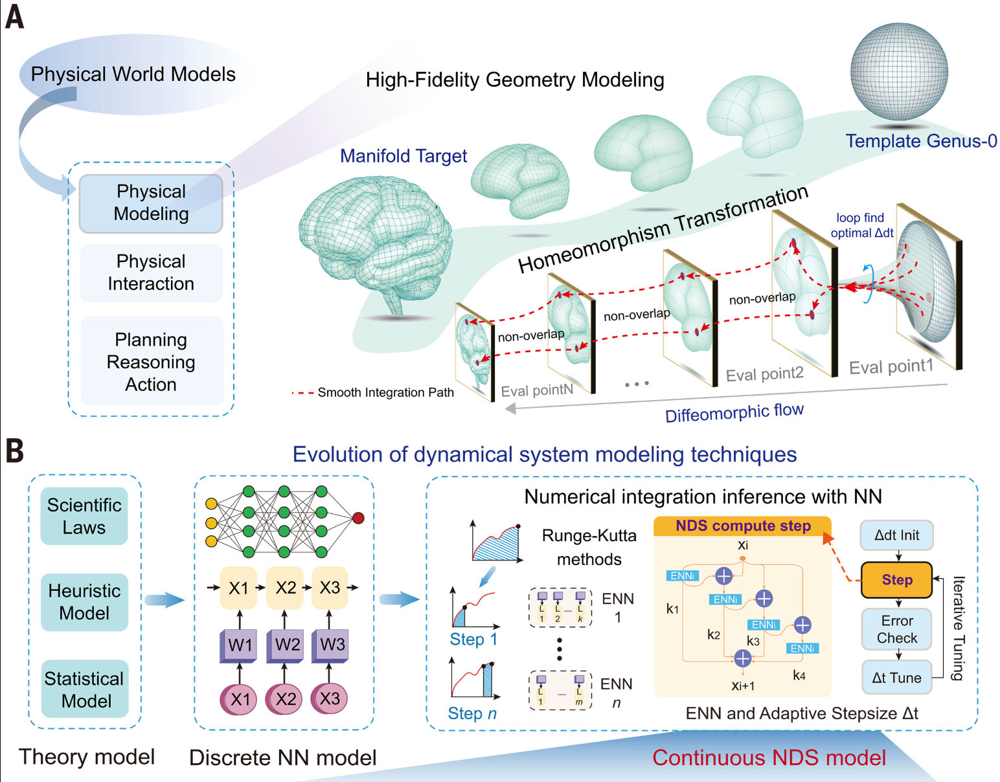
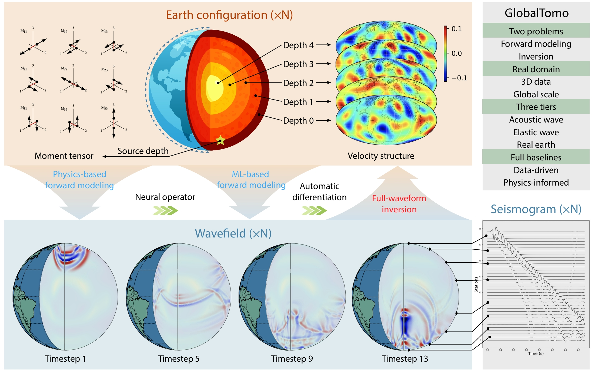
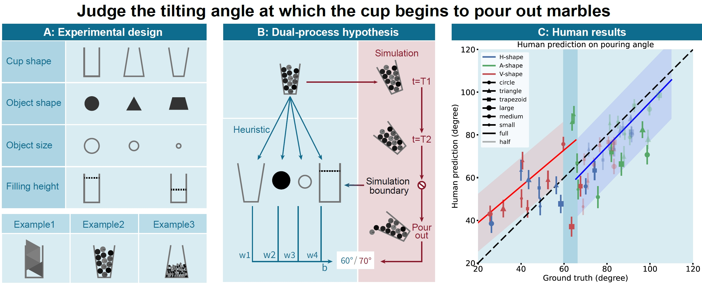
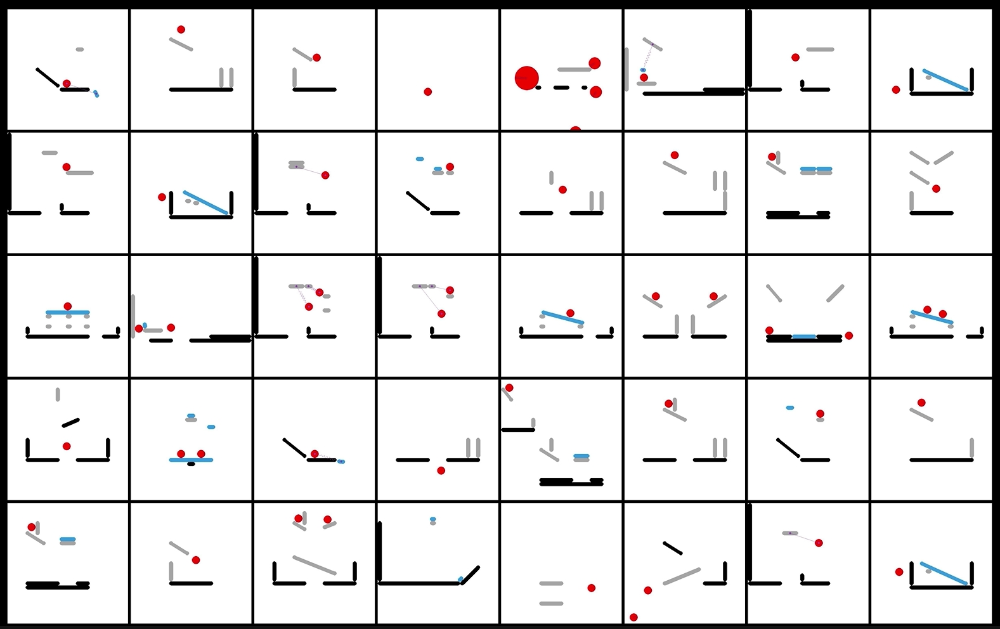
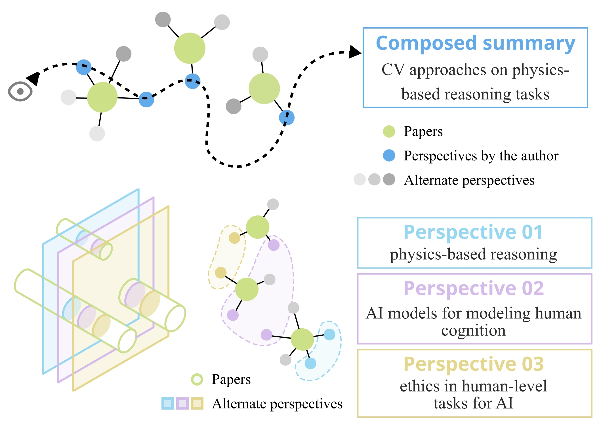
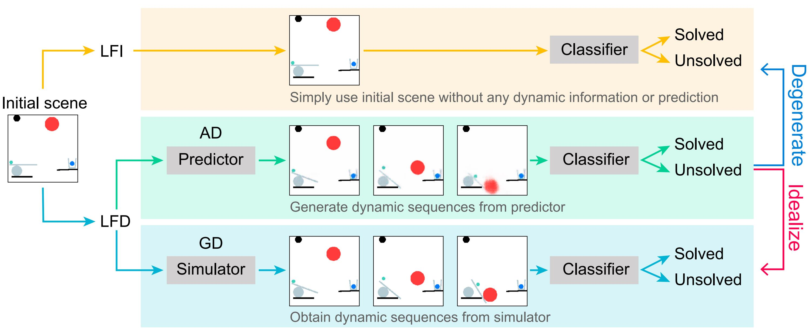
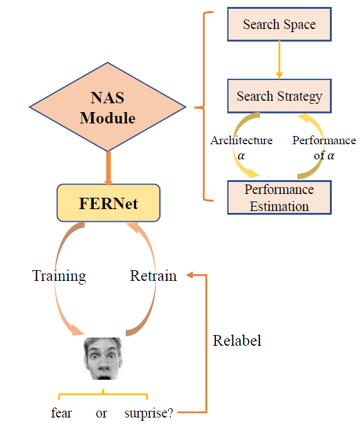
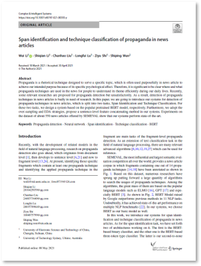

About Me
I'm now a Ph.D. student, expecting to graduate in 2027, at School of Artificial Intelligence, Peking University under the supervision of Dr. Yixin-Zhu. My goal is to build intelligent agents that can understand, predict, and interact with the physical world. Always ready to share ideas!
News!
- One paper accepted in Science 2026.
- I joined Tencent as a research intern.
- One paper accepted in CogSci 2026.
- Two papers accepted in ICLR 2026.
- Invited talk in AGU 2025
- One paper accepted in NeurIPS DB 2025.
- One paper accepted in CogSci 2025.
- One paper accepted in ICLR 2024.
- One paper accepted in ACL 2023.
- Receive a NeurIPS 2022 Scholar Award.
- One paper accepted in NeurIPS 2022 (Spotlight).
- I joined BIGAI as a research intern.
- I won The Most Outstanding Students Award of UESTC.
Interests
My research interests include
- Video Generation and World Model
- Physical Reasoning
- AI for Physics
Education
Ph.D. in Intelligent Science and Technology
2022/09–2027/06 (expected)
- Peking University, Beijing
Bachelor of Data Science and Big Data Technology
2018/09–2022/06
- University of Electronic Science and Technology of China, Chengdu
Resume 简历
Résumés in English and Chinese (PDF).
Complete papers, links, and media: see Publications on this page.
Blog
I record technical notes, research projects, and life experiences in my blog. I am also running a reading list to facilitate knowledge sharing in the community of intuitive physics. Welcome to contribute!
Publications
A Sub–10-millisecond Neural Dynamical System Based on Phase-change Memristors
Science, 2026

Overhang Tower: Resource-Rational Adaptation in Sequential Physical Planning
CogSci, 2026

Learning Physics-Grounded 4D Dynamics with Neural Gaussian Force Fields
ICLR, 2026
Neural Force Field: Few-shot Learning of Generalized Physical Reasoning
ICLR, 2026
Towards Physics-based Machine Learning Framework of Seismic Wavefield Modeling andfw Full-waveform Inversion
AGU, 2025, Invited talk
GlobalTomo: A Global Dataset for Physics-ML Seismic Wavefield Modeling and FWI
NeurIPS DB, 2025

A Simulation-heuristics Dual-process Model for Intuitive Physics
CogSci, 2025


PersLEARN: Research Training through the Lens of Perspective Cultivation
ACL, 2023

On the Learning Mechanisms in Physical Reasoning
NeurIPS, 2022, Spotlight

Auto-FERNet: A Facial Expression Recognition Network with Architecture Search
IEEE Transactions on Network Science and Engineering (TNSE), 2021

Span Identification and Technique Classification of Propaganda in News Articles
Complex & Intelligent Systems (Complex Intell. Syst.), 2021

Research Statement
Loading…
Photography
When I'm not in the lab, I enjoy wandering with my camera and capturing the beauty I stumble upon — here 's a small collection from my travels and daily life.
- Nature
- Animal
- Portrait
- Life


Click any thumbnail to open the full photography gallery.
Contact Me
Email: lishiqian2001@gmail.com